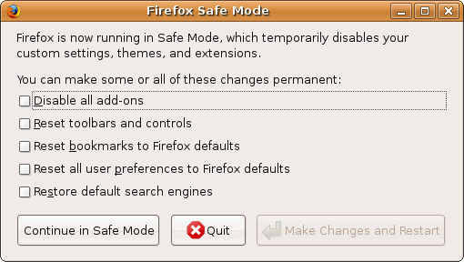

Safe-Mode
Achtung!
Da von Firefox alle sechs Wochen eine neue Version erscheint, kann dieser Artikel leider nicht – wie sonst in diesem Wiki üblich – mit einer bestimmten Ubuntu-Version getestet werden. Die Mozilla-Entwickler behalten sich vor, jederzeit neue Funktionen hinzuzufügen oder vorhandene wieder aus dem Programm zu entfernen. Unter solchen Umständen ist es nicht möglich, die Korrektheit der in diesem Artikel beschriebenen Informationen dauerhaft für eine Ubuntu-Version zu garantieren.
Zum Verständnis dieses Artikels sind folgende Seiten hilfreich:
Der Safe-Mode ist eine Art abgesicherter Modus, in dem man Firefox mit dem Standard Thema und mit deaktivierten Erweiterungen starten kann. Das ist sehr hilfreich, wenn man ein defektes Theme oder eine defekte Erweiterung sucht, die eine Fehlfunktion des Browsers verursacht oder sogar den Start des Browsers verhindert. Man kann dann diese Erweiterung oder das Theme deinstallieren.
Firefox im Safe-Mode starten¶
Um den Firefox im Safe-Mode zu starten, benutzt man die Tastenkombination Alt + F2 oder ein Terminal-Fenster [1], um folgenden Befehl einzugeben:
firefox -safe-mode
Beim ersten Aufruf des Safe Mode wird man gefragt, ob man zusätzlich die Lesezeichen und die persönlichen Benutzereinstellungen zurücksetzen will. Je nach Entscheidung wird dann der Safe-Mode immer in dieser Konfiguration gestartet. Der normale Modus ist von dieser Entscheidung nicht betroffen.

Problemlösung¶
Wenn nun das Problem im Safe-Mode behoben sein sollte, ist die Ursache bei einer Erweiterung oder Theme zu suchen.
Um herauszufinden was genau Probleme verursacht, wechselt man auf das 'Standard-Theme' (default) und deaktiviert alle Erweiterungen ("Extras -> Erweiterungen; Rechtsklick auf die Erweiterungen -> Deaktivieren")
Nachdem alles deaktiviert worden ist, sollte sich der Firefox auch im normalen Modus normal verhalten. Wenn soweit alles geklappt hat, kann man beginnen alle Erweiterungen eine nach der anderen zu aktivieren. Wichtig dabei ist es den Firefox nach jeder Aktivierung neuzustarten, bis das Problem wieder auftritt. Die zuletzt aktivierte Erweiterung hat sich somit als Übeltäter entpuppt. Genauso lässt sich auch prüfen, ob ein Theme als Problemverursacher in Frage kommt. Ist die Problemquelle nun bekannt, kann man versuchen ein Update der Erweiterungen/Themes durchzuführen. In den meisten Fällen muss sie aber deinstalliert werden.
Wenn alle Bemühungen nicht fruchten sollten, muss wohl oder übel ein neues Profil erstellt werden.
 Übersichtsartikel
Übersichtsartikel- Erstellt mit Inyoka
-
 2004 – 2017 ubuntuusers.de • Einige Rechte vorbehalten
2004 – 2017 ubuntuusers.de • Einige Rechte vorbehalten
Lizenz • Kontakt • Datenschutz • Impressum • Serverstatus -
Serverhousing gespendet von